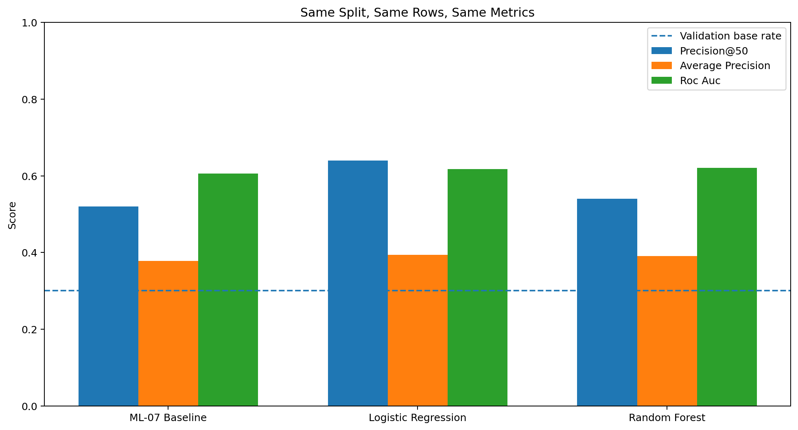
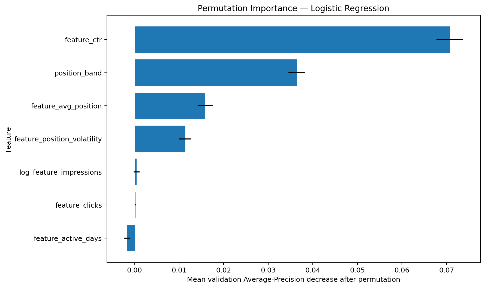
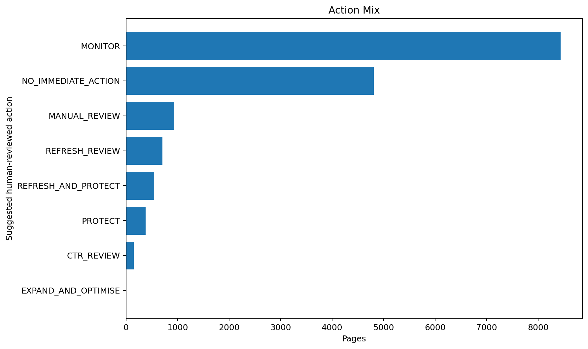
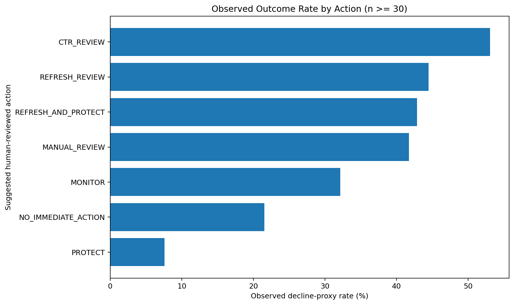
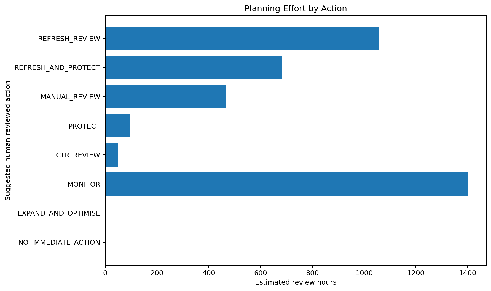

Abstract
This study asks whether historical search-performance signals can prioritise eligible content pages for human review. Using 9,841,378 daily warehouse rows from March 2026, it creates 34,038 eligible anonymised client-page records from separated feature and outcome windows. A transparent ML-07 baseline, Logistic Regression, and Random Forest are evaluated on the same grouped-client holdout, while a deliberate future-field experiment audits leakage. Logistic Regression measured a Precision@50 of 0.640 compared with 0.520 for the frozen baseline, while the validation base rate was 0.301. The observed result supports directional human decision-support and does not establish causal refresh impact, guaranteed recovery, or automatic editing.
Publication Status
Technical Report
1.2 (Pre-DOI)
2026-07-30
CC BY 4.0
To be assigned
16 pages · SHA-256 590e4e3c06be662e…
Corresponding author: zafarullah1385@gmail.com
Introduction and Problem Statement
Large websites can contain more pages than a content team can inspect in one cycle. The operational problem is not automatic editing; it is deciding what a person should inspect first.
Research Gap
Prior work commonly studies ranking-factor correlations, single-site outcomes, organisational practices, search-result reranking, or machine-readable content separately. In the reviewed literature, limited work combines real multi-client search data, separated prediction and outcome windows, grouped-client validation, a transparent baseline, leakage auditing, and a human-reviewed action playbook in one reproducible workflow.
This paper contributes an applied validation and decision-support workflow rather than a novel learning algorithm.
Data
Features use March 1-15 and the later proxy uses March 16-31. Eligible pages have at least 500 feature-window impressions, five available days in each window, valid CTR, and average position above zero through 20.
Client names, raw URLs, domains, private queries, tokens, and business identifiers are excluded. Pseudonymous IDs do not appear on this page.
Methodology
A page receives the retrospective decline proxy when outcome-window average daily impressions are below 80% of the feature-window average. Seven prediction-time features describe impressions, clicks, CTR, average position, active days, position volatility, and position band.
The frozen baseline combines 70% position-adjusted CTR weakness and 30% visibility percentile. Logistic Regression is the primary interpretable model; Random Forest is retained only if it earns the pre-declared improvement.
The retained design holds out entire clients with test size 25% and seed 42. All methods use the same validation rows and metrics.
| method | validation_rows | validation_clients | client_overlap | base_rate | precision@50 | average_precision | roc_auc |
|---|---|---|---|---|---|---|---|
| Before — random row split | 8510 | 26 | 26 | 0.3089 | 0.52 | 0.4011 | 0.6338 |
| After — grouped client split | 15963 | 8 | 0 | 0.3008 | 0.64 | 0.3939 | 0.6175 |
Leakage Audit
Outcome fields, the target, identifiers, existing scores, and product flags are excluded. An outcome-derived decline ratio produced near-perfect metrics, demonstrating why it is removed.
Results
| method | base_rate | precision@20 | precision@50 | lift@50_vs_base_rate | average_precision | roc_auc |
|---|---|---|---|---|---|---|
| Logistic Regression | 0.3008 | 0.50 | 0.64 | 0.3392 | 0.3939 | 0.6175 |
| Random Forest | 0.3008 | 0.50 | 0.54 | 0.2392 | 0.3908 | 0.6206 |
| ML-07 Baseline | 0.3008 | 0.55 | 0.52 | 0.2192 | 0.3776 | 0.6059 |

Errors and Interpretation
At the 0.50 threshold, measured accuracy was 0.562, below the majority-class accuracy of 0.699. The ranked review queue is the useful product.

| feature | importance_mean | importance_std | stable_positive |
|---|---|---|---|
| feature_ctr | 0.07075 | 0.00302 | True |
| position_band | 0.03641 | 0.00190 | True |
| feature_avg_position | 0.01589 | 0.00171 | True |
| feature_position_volatility | 0.01140 | 0.00131 | True |
| log_feature_impressions | 0.00045 | 0.00070 | False |
| feature_clicks | 0.00021 | 0.00013 | False |
| feature_active_days | -0.00174 | 0.00069 | False |
Limitations and Honest Framing
- Observational proxy label: The model ranks pages associated with a later impression-decline proxy.
- One grouped holdout and one month: The numbers are measured on the retained March 2026 holdout.
- Incomplete explanatory view: The score is one input to a wider page-level investigation.
- No intervention experiment: Actions indicate review priority, not treatment effect.
- No monetary outcome: Visibility and review time are planning proxies.
- Weak diagnostic threshold result: The useful measured output is the ranked top-50 review queue.
Ranked Recommendations
The validated score is converted into review archetypes with reason codes, confidence notes, and planning effort. Actions use prediction-time information and training-referenced thresholds.
| action_label | reason_code | pages | observed_decline_rate_pct | median_priority | estimated_review_hours | claim_status |
|---|---|---|---|---|---|---|
| MONITOR | LIMITED_FEATURE_HISTORY | 26 | 65.38 | 46.64 | 4.33 | INSUFFICIENT_N_FOR_HEADLINE |
| CTR_REVIEW | CTR_GAP_HIGH_VISIBILITY | 147 | 53.06 | 70.85 | 49.00 | DESCRIPTIVE_WITH_N |
| REFRESH_REVIEW | HIGH_RISK_HIGH_VOLATILITY | 706 | 44.48 | 58.22 | 1059.00 | DESCRIPTIVE_WITH_N |
| REFRESH_AND_PROTECT | HIGH_RISK_STABLE_PAGE_1 | 546 | 42.86 | 58.54 | 682.50 | DESCRIPTIVE_WITH_N |
| MANUAL_REVIEW | HIGH_RISK_NO_CLEAR_ARCHETYPE | 934 | 41.76 | 58.40 | 467.00 | DESCRIPTIVE_WITH_N |
| MONITOR | BORDERLINE_MEASURED_RISK | 8412 | 32.14 | 58.72 | 1402.00 | DESCRIPTIVE_WITH_N |
| NO_IMMEDIATE_ACTION | LOWER_MEASURED_PRIORITY | 4809 | 21.52 | 46.86 | 0.00 | DESCRIPTIVE_WITH_N |
| PROTECT | LOW_RISK_HIGH_VISIBILITY | 382 | 7.59 | 50.47 | 95.50 | DESCRIPTIVE_WITH_N |
| EXPAND_AND_OPTIMISE | HIGH_VALUE_PAGE_2 | 1 | 0.00 | 71.46 | 2.00 | INSUFFICIENT_N_FOR_HEADLINE |



Mandatory Human Checks
- Confirm current search intent and SERP format.
- Inspect relevant query-level evidence.
- Rule out indexing, canonical, redirect, rendering, and tracking issues.
- Verify whether content is actually stale, inaccurate, or incomplete.
- Check CTR in the context of position, volume, and SERP features.
- Check brand, conversion, legal, compliance, and business role.
- Check cannibalisation and internal-link relationships.
- Assess the risk of damaging existing visibility.
- Choose the final action only after page-level inspection.
- Define an owner, measurement window, and rollback plan.
What Must Not Be Automated
- Automatic publishing or rewriting.
- Automatic deletion, redirect, canonical, or no-index decisions.
- Automatic title, description, heading, or structured-data changes.
- Causal claims from observational associations.
- Exposure of client names, raw URLs, domains, or private queries.
- Override of editorial, legal, brand, safety, or compliance review.
- Action when data-quality or eligibility checks fail.
- Treatment of a model score as a final editorial decision.
Reproducibility
The notebooks, aggregate receipts, model configuration, seed, split design, and figures are stored in the public repository. Queue CSVs are regenerated and remain outside Git by design.
- Data contract
- Transparent baseline
- Capstone model
- Validation audit
- Action playbook
- Capstone notebook
git clone https://github.com/Zafar488/flyrank-ml-internship cd flyrank-ml-internship pip install -r requirements.txt jupyter nbconvert --execute --to notebook --inplace work/notebooks/capstone.ipynb
Dataset access requires an approved Hugging Face Read token stored securely outside the notebook. Seed: 42. Grouped validation fraction: 0.25.
Software Environment
| component | version_or_setting |
|---|---|
| python | 3.12.13 |
| execution_environment | Google Colab |
| pandas | 2.2.2 |
| numpy | 2.0.2 |
| scikit-learn | 1.6.1 |
| matplotlib | 3.10.0 |
| duckdb | 1.3.2 |
| huggingface_hub | 1.23.0 |
| joblib | 1.5.3 |
| pypdf | 6.14.2 |
| random_seed | 42 |
| grouped_validation_fraction | 0.25 |
Machine-readable publication metadata · Citation file · Searchable PDF
Declarations and AI Assistance Disclosure
License: Creative Commons Attribution 4.0 International.
Conflict of interest: The author declares no conflict of interest.
Funding: No external funding was received for this study.
AI assistance disclosure: Generative AI tools were used to support code drafting, document structuring, language refinement, and quality checks. The author reviewed the analysis, verified the reported results against executed notebooks, and accepts responsibility for the final manuscript.
Selected References
- FlyRank. (2026). The State of AI-Driven SEO in Numbers. Research paper.
- Manetti, G. (2026). Google Italy Ranking Factors 2026. DOI.
- Alhenshiri, A., Jelwal, A., & Badesh, H. (2026). Behavior-Driven Semantic Re-Ranking for Personalized Web Search. DOI.
- Reji, M. (2026). Success Factors in Search Engine Optimization. Repository PDF.
- Wen, Y., et al. (2026). Generative Engine Optimization Creates Underexamined Risks. arXiv.
- Muñoz Tebar, S. (2026). Large Language Models and the Future of SEO. DOI.
- Zulkarnain, P. D., et al. (2026). On-Page Techniques for Improved Google Search Engine Ranking: A Tourism Village Approach. SINTA record.
- Akash Raj M, Ashwin V, & Anitha Moses V. (2026). SmartSEO. Article page.
- Kargaev, D. (2026). The SEO-to-GEO Gap. SSRN.
- Pedregosa, F., et al. (2011). Scikit-learn: Machine Learning in Python. JMLR.
- Breiman, L. (2001). Random Forests. DOI.
- Davis, J., & Goadrich, M. (2006). The Relationship Between Precision-Recall and ROC Curves. DOI.
Acknowledgments and Data Credit
Built on the FlyRank ML Internship dataset. The author thanks the FlyRank internship team for the anonymised release and emphasis on honest validation and public-safe claims.